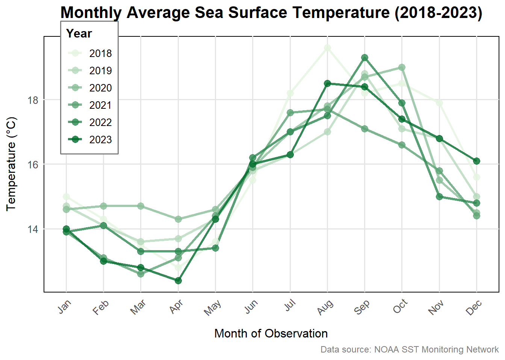
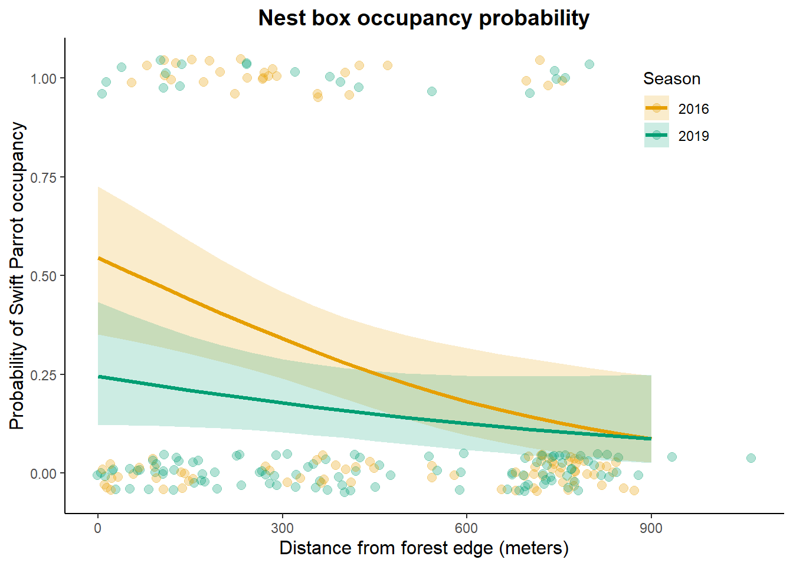

In part 1, they used a correlation test to assess the relationship between distance from the headwater (km) and annual total nitrogen load (kg/year). Since both are continuous variables and a p-value is reported, they probably used a Pearson correlation test. However, if the data weren’t normally distributed, a Spearman correlation could have been used instead.
In part 2, they likely used an analysis of variance (ANOVA) to test whether average nitrogen load differs between multiple source types: urban land, atmospheric deposition, fertilizer, wastewater treatment, and grasslands. ANOVA is a standard method for comparing averages across more than two groups.
b.
Post-hoc comparisons between source groups: The ANOVA test shows that there is a difference in average nitrogen load among the five sources, but it doesn’t say which specific sources are different from each other. A post-hoc test like Tukey’s HSD would help compare each pair of sources (for example, urban land vs. fertilizer) to see where the real differences lie.
Group averages and variation: The report should include the average nitrogen load for each source, along with a measure of spread like standard deviation or confidence intervals. This would make it easier to understand how much nitrogen each source contributes and how consistent those values are across observations.
c.
In part 1:
There is a significant relationship between distance from the headwater and annual total nitrogen load, suggesting that nitrogen levels change as you move downstream. (Correlation test, r = [correlation coefficient], p = 0.03, test statistic = [test statistic], sample size = [n])
In part 2:
Average nitrogen load differs among sources such as urban land, atmospheric deposition, fertilizer, wastewater treatment, and grasslands. Further comparisons are needed to identify which sources differ. (ANOVA, F = [F value], p = 0.02, degrees of freedom = [df], sample size = [n])
Problem 2
a.
# Load required librarieslibrary(tidyverse)
── Attaching core tidyverse packages ──────────────────────── tidyverse 2.0.0 ──
✔ dplyr 1.1.4 ✔ readr 2.1.5
✔ forcats 1.0.0 ✔ stringr 1.5.1
✔ ggplot2 3.5.2 ✔ tibble 3.2.1
✔ lubridate 1.9.4 ✔ tidyr 1.3.1
✔ purrr 1.0.4
── Conflicts ────────────────────────────────────────── tidyverse_conflicts() ──
✖ dplyr::filter() masks stats::filter()
✖ dplyr::lag() masks stats::lag()
ℹ Use the conflicted package (<http://conflicted.r-lib.org/>) to force all conflicts to become errors
library(lubridate)library(dplyr)library(here)
here() starts at C:/Users/benab/Desktop/ENVS-193DS_spring-2025_final/ENVS-193DS_spring-2025_final
# Read the datasst_data <-read_csv(here("data", "SST_update2023.csv"))
Rows: 291384 Columns: 5
── Column specification ────────────────────────────────────────────────────────
Delimiter: ","
chr (1): site
dbl (3): latitude, longitude, temp
date (1): date
ℹ Use `spec()` to retrieve the full column specification for this data.
ℹ Specify the column types or set `show_col_types = FALSE` to quiet this message.
# Clean and process the datasst_clean <- sst_data %>%# Convert date to Date type and extract year and monthmutate(date =ymd(date),year =year(date),month =month(date)) %>%# Group by year and monthgroup_by(year, month) %>%# Calculate mean temperature for each monthsummarise(mean_mnthly_sst =round(mean(temp, na.rm =TRUE), 1)) %>%# Arrange chronologicallyarrange(year, month) %>%# Convert to data frameas.data.frame()
`summarise()` has grouped output by 'year'. You can override using the
`.groups` argument.
'data.frame': 504 obs. of 3 variables:
$ year : num 1982 1982 1982 1982 1982 ...
$ month : num 1 2 3 4 5 6 7 8 9 10 ...
$ mean_mnthly_sst: num 13.1 13.5 13.3 12.9 14.4 14.5 15.7 17.1 18.1 17.5 ...
b.
#| fig-height: 5#| fig-width: 10#| fig-align: center#| warning: falselibrary(ggplot2)library(dplyr)library(lubridate)# Prepare the datasst_recent <- sst_clean %>%filter(year >=2018& year <=2023) %>%mutate(month_abb = month.abb[month],month_abb =factor(month_abb, levels = month.abb),year =factor(year)) # Convert year to factor for proper coloring# Create gradient color palette (light to dark green)year_palette <-colorRampPalette(c("#e5f5e0", "#006d2c"))(length(unique(sst_recent$year)))ggplot(sst_recent, aes(x = month_abb, y = mean_mnthly_sst, group = year, color = year)) +# Geometriesgeom_line(linewidth =1.2, alpha =0.8) +geom_point(size =3, alpha =0.8) +# Color scale (light to dark green gradient)scale_color_manual(values = year_palette, name ="Year") +# Labels and textlabs(title ="Monthly Average Sea Surface Temperature (2018-2023)",x ="Month of Observation",y ="Temperature (°C)",caption ="Data source: NOAA SST Monitoring Network") +# Theme adjustmentstheme_minimal(base_size =12) +theme(plot.title =element_text(hjust =0.5, size =16, face ="bold", margin =margin(b =15)),axis.title.x =element_text(size =12, margin =margin(t =10)),axis.title.y =element_text(size =12, margin =margin(r =10)),axis.text.x =element_text(angle =45, hjust =1, size =10),axis.text.y =element_text(size =10),legend.title =element_text(size =12, face ="bold"),legend.text =element_text(size =10),legend.position =c(0.1, 0.8), # Inside panel positionlegend.background =element_rect(fill ="white", color ="gray50"),panel.background =element_rect(fill ="white", color ="black"), # Panel borderpanel.grid.major =element_line(color ="gray90"),panel.grid.minor =element_blank(),plot.caption =element_text(size =9, color ="gray50", hjust =1) )
Warning: A numeric `legend.position` argument in `theme()` was deprecated in ggplot2
3.5.0.
ℹ Please use the `legend.position.inside` argument of `theme()` instead.

Problem 3
a.
the 1 is placed in the column representing occupation by a specific bird species or emptiness.
b.
The main difference is that Swift Parrots are the native target species for nest box conservation, while Common Starlings are invasive competitors and Tree Martins are native but non-target competitors. The study wants to analyze if providing box habitat helps the competitor more than the bird trying to be conserved.
c.
The study compares nest box occupancy in 2016 (when boxes were newly deployed) versus 2019 (after boxes had been established for three years). The key difference is that competitor species (Common Starlings and Tree Martins) showed stronger preference near forest edges n the established boxes (2019) compared to when boxes were first installed (2016), while Swift Parrot use remained consistent across both years.
# 2. CHECK FOR REQUIRED COLUMNSrequired_cols <-c("box", "sp", "season", "edge_distance")missing_cols <-setdiff(required_cols, colnames(data))if (length(missing_cols) >0) {stop("Missing required columns: ", paste(missing_cols, collapse =", "))}# 3. RUN MODELS (now using cleaned names)null_model <-glmer(sp ~1+ (1|box), data = data, family = binomial,control =glmerControl(optimizer ="bobyqa"))sat_model <-glmer(sp ~ season * edge_distance + (1|box),data = data,family = binomial,control =glmerControl(optimizer ="bobyqa"))
Warning: Some predictor variables are on very different scales: consider
rescaling
Warning in checkConv(attr(opt, "derivs"), opt$par, ctrl = control$checkConv, :
Model failed to converge with max|grad| = 0.870236 (tol = 0.002, component 1)
Warning in checkConv(attr(opt, "derivs"), opt$par, ctrl = control$checkConv, : Model is nearly unidentifiable: very large eigenvalue
- Rescale variables?;Model is nearly unidentifiable: large eigenvalue ratio
- Rescale variables?
Warning in checkConv(attr(opt, "derivs"), opt$par, ctrl = control$checkConv, : Model failed to converge with max|grad| = 1.10943 (tol = 0.002, component 1)
Warning in checkConv(attr(opt, "derivs"), opt$par, ctrl = control$checkConv, : Model is nearly unidentifiable: very large eigenvalue
- Rescale variables?;Model is nearly unidentifiable: large eigenvalue ratio
- Rescale variables?
The best model as determined by Akaike’s Information Criterion (AIC) was the model that included an interaction between season and edge distance as predictors of species presence. This indicates that the relationship between edge distance and the likelihood of species presence changes depending on the breeding season.
h.
# Load required packageslibrary(lme4) # For mixed modelslibrary(ggplot2) # For plottinglibrary(ggeffects) # For predictionslibrary(janitor) # For cleaning names# 1. Load and prepare data (using original file)bird_data <-read.csv("data/occdist.csv") %>%clean_names() %>%# Fix column names (e.g., 'edge distance' -> 'edge_distance')mutate(season =factor(season)) # Convert season to factor# 2. Fit the BEST MODEL identified in Part G# (Assuming the saturated model was best: sp ~ season * edge_distance + (1|box))best_model <-glmer( sp ~ season * edge_distance + (1|box),data = bird_data,family = binomial,control =glmerControl(optimizer ="bobyqa"))
Warning in checkConv(attr(opt, "derivs"), opt$par, ctrl = control$checkConv, :
Model failed to converge with max|grad| = 0.309329 (tol = 0.002, component 1)
Warning in checkConv(attr(opt, "derivs"), opt$par, ctrl = control$checkConv, : Model is nearly unidentifiable: very large eigenvalue
- Rescale variables?;Model is nearly unidentifiable: large eigenvalue ratio
- Rescale variables?
# 3. Generate predictions with 95% CIpreds <-ggpredict( best_model,terms =c("edge_distance [0:900 by=50]", "season"), # Full distance rangetype ="random"# Include random effects) %>%as.data.frame() %>%rename(season = group)
It seems that unit-level predictions are requested (`type = "random"`),
but no random effects terms (grouping variables) are defined in the
`terms` argument. Either add a random effects term to the `terms`
argument, or set `type = "fixed"` to get meaningful results (in this
case, population-level predictions).
# 4. Create the plotoccupancy_plot <-ggplot() +# Raw data (jittered points)geom_point(data = bird_data,aes(x = edge_distance, y = sp, color = season),position =position_jitter(width =15, height =0.05),alpha =0.3, size =2.5 ) +# Model predictions (line + CI ribbon)geom_ribbon(data = preds,aes(x = x, ymin = conf.low, ymax = conf.high, fill = season),alpha =0.2 ) +geom_line(data = preds,aes(x = x, y = predicted, color = season),linewidth =1.2 ) +# Custom styling (non-default colors, no gridlines)scale_color_manual(values =c("#E69F00", "#009E73"), # Orange and tealname ="Season" ) +scale_fill_manual(values =c("#E69F00", "#009E73"),name ="Season" ) +labs(x ="Distance from forest edge (meters)",y ="Probability of Swift Parrot occupancy",title ="Nest box occupancy probability" ) +theme_classic() +# Removes gridlinestheme(plot.title =element_text(hjust =0.5, face ="bold", size =14),axis.title =element_text(size =12),legend.position =c(0.85, 0.85) )# Display plotprint(occupancy_plot)

i.
Figure 1. Predicted probability of Swift Parrot (Lathamus discolor) nest box occupancy in relation to distance from forest edge, stratified by season (2016 vs. 2019). Points represent raw observational data (jittered vertically for visibility), where y = 1 indicates Swift Parrot presence and y = 0 indicates absence. Solid lines show predicted probabilities from the best-fit generalized linear mixed model (season × distance interaction with nest box as a random effect), with shaded 95% confidence intervals. Data from Stojanovic et al. (2021), Dryad Dataset https://doi.org/10.5061/dryad.83bk3j9sb.
j.
# Load required packageslibrary(ggeffects) # For predictions with CIlibrary(dplyr) # For data manipulation# 1. Calculate predictions at 0m and 900m for each seasonpredictions <-ggpredict( best_model, # Using the model from Part Hterms =c("edge_distance [0,900]", "season"), # Specific distancestype ="random"# Include random effects variance) %>%as.data.frame() %>%select(Season = group,Distance = x,Probability = predicted,CI_low = conf.low,CI_high = conf.high ) %>%mutate(across(Probability:CI_high, ~round(., 3))) # Round to 3 decimal places
It seems that unit-level predictions are requested (`type = "random"`),
but no random effects terms (grouping variables) are defined in the
`terms` argument. Either add a random effects term to the `terms`
argument, or set `type = "fixed"` to get meaningful results (in this
case, population-level predictions).
The results show Swift Parrots strongly prefer nest boxes near forest edges. In 2016, occupancy probability was 54.5% at the edge (0m) but dropped to 8.7% at 900m into the forest. In 2019, edge occupancy was lower (24.6%) but showed the same steep decline to 8.7% at 900m. This pattern appears in Figure 1 as a rapid drop in the curves from left to right. The higher occupancy near edges likely occurs because Swift Parrots feed on nectar from flowering eucalypt trees that grow best in open, edge habitats. The difference between years (54.5% vs 24.6% at edges) may reflect changes in food availability or parrot population size between 2016 and 2019. The consistently low occupancy in forest interiors suggests these areas provide poor habitat, possibly due to fewer flowering trees or greater predation risk. These findings emphasize that protecting edge habitats is crucial for Swift Parrot conservation.
Problem 4
a.
I used simpler visualizations for my data because it did not have as much detail and data.
These plots simlarly are using a confidence interval to graph the data and show it.
The trends show how the birds lost favor in the nesting boxes between the two breeding seasons recorded.
I was told to avoid small errors in assignments and do better work polishing submissions like homework.